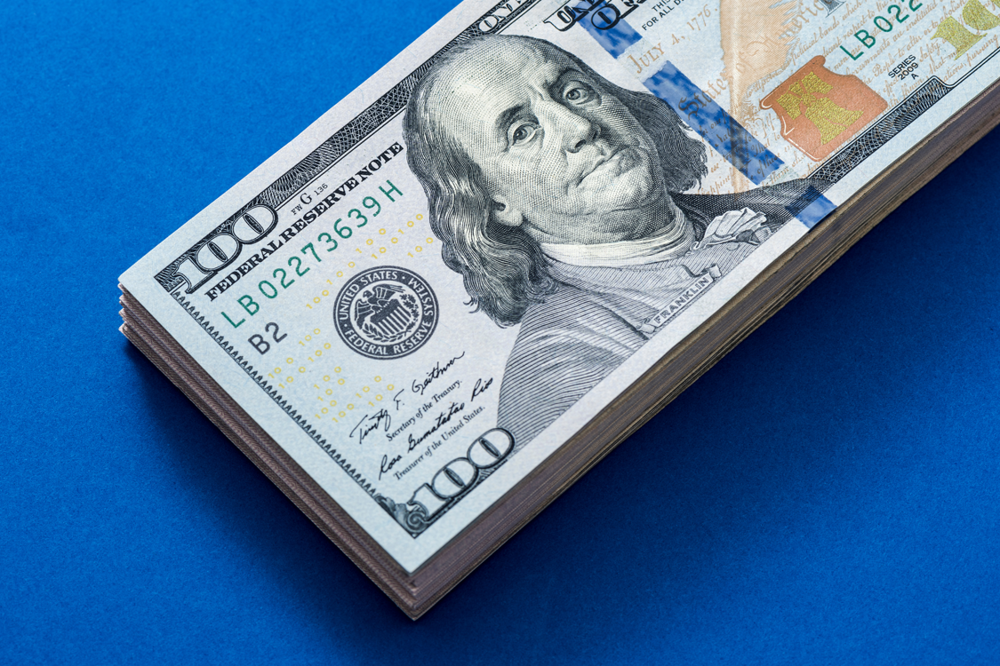

여행지도 낯설지만 그 곳에서 사용하는 화폐는 더욱 낯설기만 합니다. 동남아 같은 경우는 물가가 달라 더 어려운 것이 바로 권종인데요. 웨이즈가 제공하는 외화 권종 선택 서비스는 비행기에서 내리자 마자 잔돈이 없어 당황할 고객님 들을 위해 특별히 준비된 서비스입니다.
고액권은 전~부 고액권으로 드립니다.
각종 통화의 고액권만 봉투에 넣어 제공해드리는 선택 옵션입니다. 동남아와 같은 이중 환전을 목적으로 하시는 분들은 고액을 선택하여 100달러(USD)만 챙기시는 것을 추천 드립니다. 동남아 지역에서는 권종에 따라 환율이 다르기 때문이죠.
소액권은? 전부 소액만 주시나요?
대답은 NO입니다. 고객님께서 신청해주신 외화의 10~20%정도만 소액을 골고루 섞어 전달 드리는 서비스입니다. 해당 옵션은 외화 보유량에 따라 유동적으로 변동될 수 있으며 고액권과 소액권을 함께 받을 수 있는 장점이 있습니다.
동전은 제공하지 않습니다.
현재 웨이즈에서 취급하는 통화와 권종은 아래와 같습니다. 더 많은 국가 통화를 서비스하기 위해 오늘도 노력중이며 고객 님들의 의견에 두 귀 쫑긋 세우고 경청하겠습니다.
일본 엔(JPY)
1,000엔 / 5,000엔 / 10,000엔
미국 달러(USD)
1달러 / 10달러 / 20달러 / 50달러 / 100달러
중국 위안(CNY)
100위안
태국 바트(THB)
1,000바트
대만 달러(TWD)
1,000달러
홍콩 달러(HKD)
100달러 / 500달러
호주 달러(AUD)
50달러 / 100달러
싱가폴 달러(SGD)
50달러 / 100달러
필리핀 페소(PHP)
1,000페소